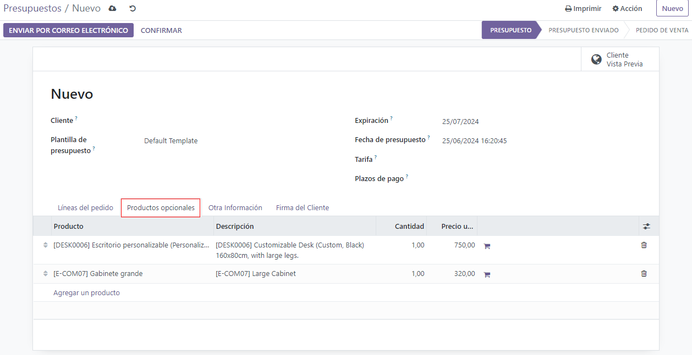
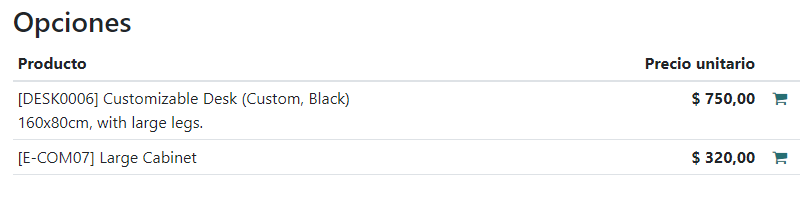

Productos opcionales¶
El uso de productos opcionales es una estrategia de marketing que implica la venta cruzada de productos junto con un producto principal. El objetivo es ofrecer productos útiles y relacionados a los clientes, lo que puede resultar en un aumento de ventas.
Por ejemplo, si un cliente desea comprar un automóvil tiene la opción de ordenar asientos con función de masaje o puede ignorar la oferta y solo comprar el vehículo. La experiencia del cliente mejora si le proporciona la opción de comprar productos opcionales.
Productos opcionales en las cotizaciones¶
Con la aplicación Ventas de Odoo puede agregar o modificar productos opcionales directamente en las cotizaciones si se dirige a la pestaña productos opcionales en un formulario de cotización.
Para añadir productos opcionales a la cotización, haga clic en Agregar un producto en la pestaña Productos opcionales desde la cotización. Al hacerlo, aparecerá un campo en blanco en la columna Producto.
Si hace clic sobre el campo, aparecerá una lista desplegable con productos de la base de datos y podrá seleccionar el que desee para agregarlo como un producto opcional a la plantilla de la cotización.
Truco
Si el producto que desea no está visible, escriba el nombre del producto en el campo y la opción aparecerá en la lista desplegable. Selecciónelo para agregarlo a la cotización.
Nota
Al agregar un producto, la cantidad predeterminada es 1, pero puede editarlo cuando quiera.
Para eliminar cualquier línea de artículo desde la pestaña Productos opcionales, haga clic en el icono 🗑️ (papelera).
Haga clic en el botón Vista previa que se ubica en la esquina superior izquierda de la cotización para que aparezca una vista previa de la cotización que los clientes recibirán a través de su correo electrónico, junto con los productos opcionales que pueden agregar a su orden desde la sección Opciones.
Los clientes pueden agregar diferentes productos opcionales a su orden si hacen clic en el icono the 🛒 (carrito de compras) que se ubica a la derecha de la línea de producto opcional.
Si un cliente selecciona productos opcionales, estos se agregan de manera automática a la cotización que gestiona el vendedor.
Cuando el cliente agrega productos opcionales a una orden, el vendedor recibe una notificación inmediata sobre el cambio, junto con cualquier otra modificación que el cliente realice. Esto permite que el personal de ventas esté al tanto de todo lo relacionado con una orden en el backend de la aplicación Ventas.
Productos opcionales en las plantillas de cotización¶
Nota
Asegúrese de consultar la documentación sobre las Plantillas de cotización para entender mejor cómo funcionan las plantillas de cotización antes de leer la siguiente información.
Para las plantillas de cotización, al igual que en un formulario de cotización común, también hay una pestaña de productos opcionales en la que se pueden agregar productos o servicios relacionados.
Para agregar productos opcionales a una plantilla de cotización, vaya a la aplicación . Luego, seleccione una plantilla existente para editarla o cree una nueva con el botón Nuevo.
En el formulario de la plantilla de cotización, haga clic en la pestaña Productos opcionales y luego en Agregar una línea para seleccionar el producto opcional que desee a la plantilla de la cotización.

De manera predeterminada, los productos que se agregan a la pestaña Productos opcionales están presentes en la cotización cuando se usa es plantilla en específico. Puede eliminarlos y agregar otros productos opcionales antes de enviarle la cotización a un cliente.
Truco
Es mejor ofrecer productos opcionales que alienten a un cliente a agregar artículos adicionales a su orden o a comprar una versión más costosa del producto que seleccionó al inicio.
Por ejemplo, si un cliente compra una silla de madera, algunos productos opcionales podrían ser una garantía para esa silla o una silla de madera con asientos de piel.
Nota
No existe límite en cuanto al número de productos opcionales que puede agregar a una plantilla de cotización.
Ver también